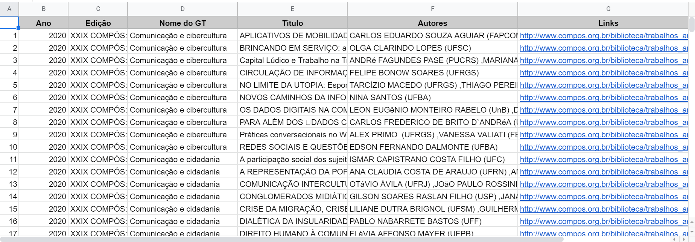

Compos
O que é a COMPÓS?
A COMPÓS - Associação Nacional dos Programas de Pós-Graduação em Comunicação - foi fundada em 16 junho de 1991, em Belo Horizonte, com o apoio da Capes e do CNPq, a partir da iniciativa de alguns pesquisadores e representantes dos seguintes cursos de Pós-Graduação: PUC-SP, UFBA, UFRJ, UnB, UNICAMP, UMESP. É uma sociedade civil, sem fins lucrativos, congregando como associados os Programas de Pós-Graduação em Comunicação em nível de Mestrado e/ou Doutorado de instituições de ensino superior públicas e privadas no Brasil. A COMPÓS tem como objetivos principais o fortalecimento e qualificação crescentes da Pós-Graduação em Comunicação no país; a integração e intercâmbio entre os Programas existentes, bem como o apoio à implantação de novos Programas; o diálogo com instituições afins nacionais e internacionais; o estímulo à participação da comunidade acadêmica em Comunicação nas políticas do país para a área, defendendo o aperfeiçoamento profissional e o desenvolvimento teórico, cultural, científico e tecnológico no campo da Comunicação.
Como espaço de intercâmbio acadêmico entre os pesquisadores dos vários Programas, a COMPÓS tem como fórum privilegiado os Encontros Anuais, estruturados sob a forma de Grupos de Trabalhos (GTs), onde são apresentados e debatidos estudos que buscam refletir sobre o avanço científico, tecnológico e cultural no campo da comunicação.
Diante disso, desenvolvemos o Anais-COMPOS-scraper – disponível aqui – que realiza o download automatizado de todos os papers em pdf dos Encontros da COMPÓS entre 2000 até 2020 (disponíveis atualmente na site). Além disso, o script também gera um arquivo CSV (comma-separated values) contendo as seguintes informações para cada paper: Ano, Edição, Nome do GT, Título, Autores, e Link do Arquivo. Esse arquivo pode ser aberto como uma planilha e trabalhado em banco de dados.
O raspador expressa mais uma iniciativa que busca contribuir para uma ciência aberta e transparente, facilitando o acesso aos dados dos congressos e contribuindo para a preservação da memória das ciências sociais brasileiras.
Script de raspagem
R e RStudio
O R e RStudio são gratuitos e possuem versões para Windows, Mac e Linux. A instalação é bastante fácil e em geral você apenas tem que seguir as instruções da tela.
Para instalar o R, baixe a versão adequada para seu computador em: https://cloud.r-project.org/
Para instalar o RStudio, baixe a versão adequada para seu computador em: https://www.rstudio.com/products/rstudio/download/
Além disso, para ter um ambiente completo de desenvolvimento no R, recomendamos, adicionalmente, instalar:
– MikTex (para Windows: http://miktex.org/download ou MacTex (para Mac: https://tug.org/mactex/downloading.html para relatórios em latex.
– RTools (para Windows: https://cran.r-project.org/bin/windows/Rtools/ ou Xcode com command line tools (para Mac na AppStore do Mac), para criar pacotes, usar C++ com R entre outras coisas
Após a instalação, vc pode executar o arquivo compos.R que está na pasta R direto do RStudio.
Bibliotecas e módulos
Vocêr vai precisar instalar as seguintes bibliotecas:
Chromedriver
Dados
O programa exporta, para cada edição do congresso, uma tabela no formato CSV com as seguintes informações de cada trabalho apresentado:
Ano,Edição,Nome do GT,Título,Autores,Links.
A imagem abaixo ilustra o formato de uma das tabelas:

Download: Se preferir baixar a base dos PDFs sem usar o código clique aqui. (OBS:a nomeação ainda contém alguns pequenos erros que serão corrigidos em breve)
Download: Se preferir baixar a planilha sem usar o código clique aqui.